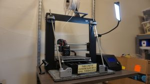
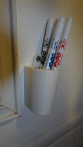

Setting up an Electronics Lab - Tools
Published December 1, 2019
Between 10 years working in stage lighting, live video, and theatrical special effects; three moves and two home workbench-overhauls; and my new-this-month position as an Exhibit Engineer at a major Midwest science museum, I've planned and kitted-out many electronics workbenches over the years. For those interested in getting involved in hobby or professional electronics work, I've compiled the tools I think are most useful when building up a workspace for electronics construction and troubleshooting.
I'm going to specifically focus on tools and support-hardware this time around, and not dive too deep into supplies and consumables, purely to maintain focus. The parts and pieces you need will be wildly different if your specific focus is scratch-building accelerometers vs twitter-connected instant cameras, say. But in the wide and deep pool of 'working with electronics,' here are some flotation aids that will keep your head above water most of the time.
Soldering
As both hobbyists and professionals, we are often looking not for the best tool, but one that's good enough for the job without breaking the bank. If there's one tool that I'd recommend getting the 'good' versus the 'good enough' version, it's a soldering iron. I thought for years I was just bad at soldering. Nope, just a crappy $25 Radio Shack soldering iron that was doing me no favors.
Not that 'good' has to mean 'super expensive.' In my home shop and my current shop at work, I used the Hakko 888D, which has proved reliable and durable, even if the interface is a little unintuitive. For less than $100, that's a darn good iron. The shop at my previous job has a cheapie 3-in-1 soldering/hot-air-rework/power supply station, and for most things that was just fine. They're such a huge leap above a 'soldering pencil,' and they'll last for years,
The trusty Hakko 888D. I now have one of these at home and one at work, and they're a very nice little iron.
Whatever iron you choose, you'll want some additional tips to go with it. While you could get the pack of every tip imaginable, I find myself using either the medium chisel or the fine-conical %99.9 of the time, so a smaller assortment is probably fine.
As far as solder, while there are good environmental reasons to go with lead-free solder, there's nothing quite so good to work with as classic Kester rosin-core 60/40, nice and thin. A one-pound reel of that stuff will last most people years. While you could buy a solder-reel stand, I've found a 3D-printed design that I really like (credit to Phredie on Thingiverse).
One pound of Kester 60/40 in my favorite 3D printed holder. As busy as we are, I might actually make in through this roll in a year or two.
You'll also want some flux, either as a paste or in my preferred form as a solder pen. While rosin-core solder has flux built-in, any time you're doing rework, SMD work, or just taking a little longer to deal with a tricky part, flux makes sure your surfaces are clean and ready to accept the molten solder.
Speaking of keeping things clean, let's talk about cleaning your soldering iron tip. The sponge and wire-wool cleaner than come with your iron are plenty, if you treat your iron right. More aggressive chemical fluxes like those found in "tip-tinners and cleaner" are meant to remove long-built-up oxidation on your iron tip, and are overkill for routine tip-cleaning. I was taught to dab the iron in the wire-wool between each joint (realistically, between every several joints), and wipe on the sponge before the iron goes back in the stand. That should be all you need.
To remove solder from things other than your iron may take some special tools. De-soldering braid is a great tool - its a woven copper ribbon impregnated with flux, that, when heated against a solder joint, sucks the molten solder up via capilary action. For getting the last little bit of solder out of through-hole pads, a solder-sucker is the tool - find yourself a cheap one, they're all pretty much the same. At my last job, we purchased a cheap vacuum desoldering station, which was fine, but mostly could have been replaced by solder-wick in 90% of applications. Perhaps a brand-name vacuum desoldering station would have done the job better, but in any case when setting up my shop at the new job, I passed on this tool. For more thoughts on all these tools/techniques, W2AEW has a great video on desoldering if you find yourself in a pinch.
Whether your soldering or desoldering, you're going to be making some nasty fumes melting all that flux, so get yourself some kind of filtering fan. I've got a dirt-cheap Aoyue filter-fan on my home bench, and both a cheap Kotto and an expensive Hakko on my bench at work now, and they're all about as good as each other, and they all suck (not in the way you want a filter fan to suck). I replaced the fan in my Aoyue with a 120V 4" Muffin fan (pulled from an closing musical's fog-distribution system, in my case), and it's made a world of difference, I highly recommend upgrading. Just be careful, those fans bite.
Now that's a big fan! Inherited from a previous museum exhibit.
There are about as many different kinds of work-holding clamps as there are people who solder, but my two favorites are this 3D-printed PCB vise for flat-work and these octopus-style 3rd-hands for other unusual shapes. I've used the classic Panavise clamps, and for a shared-shop environment I'd recommend them for their sturdy build quality. But I find them to be a little bit too bulky and their jaws not quite wide enough for the work I find myself doing, so I opt for other solutions in my just-for-me setups. You do you though.
Almost 6" of jaw space on this 3D printed workholder. You can tell I ran out of grey filament halfway through printing the parts.
Electronic Test and Measurement
The two big items in this category are multimeters and oscilloscopes. Let's take a look at both of them first before we get into some more specialized tools.
There are lots and lots of good-enough multimeters in the world today, of all kinds of different brands, and they're pretty much going to all be OK. Rather than try and pick out specific ones from Amazon, here are the features I'd look for if I was looking to add a decent multimeter to my bench today:
- The basics: AC/DC Voltage, AC/DC Current (up to 10A is useful), resistance (to 0.1Ω and 1 MΩ is nice).
- Continuity test- this is the most useful setting on a multimeter. Using this setting and touching a wire/component/circuit with the probes will tell you if there's a low impedance path between the two points; i.e., if they're connected. Super useful.
- Auto power-off. Doesn't seem like much, but it's real easy to kill batteries without it.
- 4-digit precision (some cheap meters only give 3)
The other features a meter might have include: temperature measurement, diode-forward-voltage measurement, True RMS AC measurement, frequency (power line), duty-cycle, capacitance, transistor hFE, illumination... the list goes on. I've appreciated having a true RMS measurement in tricky AC power situations, and having an easy frequency-check can be handy, but for the rest of these, I'd rather rely on a purpose-made tool like a thermometer, lightmeter, or transistor checker, rather than something built into my multimeter.
I got this meter almost 8 years ago in a moment of need, at a Menards if memory serves, and it's worked swell ever since.
If you've got the cash and are looking for something to last 20 years, the Fluke 117 is a really solid primary meter. Fluke has been the brand name in quality meters for the past lots-of-years - well made, reliable, accurate. Not super cheap, but you do get what you pay for. My current department has standardized on them, and that's been swell. For most things, we don't need the $300+ meter (which gives you min/max tracking and microAmp measurement) or the $500 meter (with its fancy clamps and probes). In fact, a basic $40 meter is going to be fine for almost everything you do.
A little aside - why are there no benchtop-multimeters in the super-affordable price range? When you can get a passable, portable multimeter for $20, why are even the cheapie-versions of a benchtop meter still $150? I think there would be a strong market for a $60, benchtop form-factor, ok-ish meter. I have an old Simpson 460-6 at work that I love using, not because it's the world's most amazing meter, but just because it's always there and the form factor is right. How about it, AliExpress?

Now can I get this form factor, with a little adorable LED display, for less than $200?
Moving on to oscilloscopes, I think there are some who would say they aren't essential for electronics work - after all, if you end up working mostly with digital signals, or analog-voltages that don't change over time, is it really worth it? I would counter that the oscilloscope is your eyes into the realm of what your electronics are doing, and is a vitally useful tool in many situations. If you've never used an oscilloscope, may I once again recommend a video by W2AEW.
Scopes are another arena where you don't need to break the bank to get something decent enough to use. My first scope was a well-aged BK-Precision 1535A 35Mhz analog scope that a bought from a guy on Craigslist for about $40. For basic electronics work, 20Mhz or so is plenty - you're most likely going to working at slower speeds (audio to 20Khz, maybe 250kHz for serial or RS485) or much, much higher (HDMI, USB, etc) where a scope really isn't the right tool in most cases anyway. Or at least, once you've progressed to the level where you're worrying about measuring GHz signals, you've likely acquired more specialized tooling along the way.
This old thing is still puttering away on my workbench. Still worked just fine for most things I'd care to do with it.
I think a decent analog scope is a really good place to start if you've never used a scope before - better to tackle the fundamentals of the tool before having to learn how to use a particular menu structure as well. The shop at my new job came with a Hitachi V1565 100MHz analog scope with measurement capability that I've been very happy with - the ability to add cursors to an analog display to measure voltage, time, or duty cycle is handy. At home I've now also got an Owon PDS5022T 25MHz digital scope that was gifted to me - I like the tools having a digital scope provides, but I find it significantly more clunky than either of the classic analog scopes in my life.
The "new" (to me) oscilloscpe I have at work. 100MHz bandwidth is overkill for anything I can think we'll run into, but you never know...
So, if you're looking for a bench scope and you've never used one before, I'd say start analog. I see on eBay right now you can buy a gently-loved 2-channel analog scope for around $50-60 (plus $40 shipping, those things aren't light). Not a bad way to go.
Something my accomplice at my old job turned me on to is small, portable oscilloscopes. I don't have a specific model to recommend, but they can be useful in specific circumstances - not so much to actually interrogate the characteristics of a signal, but more as a signal checker. Do I have AC here, do I have something that looks like RS-485 there, etc? If you do buy one, make sure you get one with an integrated battery (not all do) - getting one that still has to be plugged in makes it far less useful.
There are some more niche electronic tools that I make use of on my bench, but mostly because of my ham radio background. A decent frequency counter is useful in that arena - I've got a classic Heathkit IM-2420 that I picked up at a swap-meet, but I'm really intrigued by the new wave of inexpensive benchtop frequency counters that have popped up in the past couple years that claim to do 0.1Hz-2.4GHz for only $70. A signal genetor is also really useful in my work - I built my own around an Si5351 and an Arduino, but you can buy a 0-25Mhz or 0-60Mhz arbitrary function generator for not a lot of cash these days, and I have colleagues who speak highly of both. Since my last job was more lighting-focused, we purchased an Extech digital lightmeter for a specific project - sometime I'd love to get into why that specific meter and the challenges of metering LED sources, but that discussion is too long for this margin to contain.
Some specialized tools for specialized circumstances. A sweep generator, frequency counter, DC power supply, oscilloscope, and homebrew frequency generator.
Electrical Power
A source of consistant, controlled DC power is vital for electronics work, since most projects are going to be some flavor of DC-powered. For basic logic-level type work, the least-expensive option is probably an ATX computer power supply with an ATX breakout board, which will at least provide +3.3, +5, +12 and -12V, which suffices for a lot of Arduino+sensors or Raspberry Pi+breakouts type projects. There are a thousand flavors of those breakout boards, so make sure you find one with the ATX connector type that matches your power supply. There are also screw terminal and terminal lug versions, if you have strong feelings either way.
If your work is less module-oriented and more about building up circuits in a more from-scratch way, a current-limited bench power supply is key. A decent power supply will supply relatively low-ripple DC voltage from 0 to 20 or 30 or 50 volts, at 5 or 10 amps max, commonly. What's more, you can set a current-limit such that, when your project runs away and tries to turn itself into a pile of smoke, at least it does so more slowly - the power supply will typically fold back its output voltage to keep the output current below the value you specify. Some fancier models also have the option to just cut off current entirely until the power supply is reset.
Versions of this Yescom power supply are available all over the internet at around the $50 price point.
My current recommended inexpensive bench power supply is the Hanmatek HM305P, for a couple reasons - having a digital display so you can set the output voltage at, say, exactly 5V, is handy. As are the six front-panel preset buttons that allow you to jump to commonly-used voltage/current limit combinations that you specify. That said, at home I have a Yescom power supply with a somewhat higher output current that's useful for testing RF amplifiers, and its analog controls make it somewhat easier to smoothly vary to the output voltage and see how a circuit/amplifier reacts. If I had to choose only one, I'd get the Hanmatek (or one of its many clones), but an analog-controlled meter is handy for certain situations. (I got by with an Elenco Precision XP-656 500mA 0-30V DC supply as my primary current-limited supply for years.)
The Hanmatek interface (top right) is a little unintuitive, but the manual is decently written. It's sitting on top of an older tri-voltage power supply.
To connect your power supply to your board, you're going to need an assortment of wires and connectors. A handful of the typical USB cable types (A-to-Mini, A-to-B, A-to-Micro) is useful, and you probably already have them floating around in your sock drawer. Generic alligator clips are always handy. Mini-grabber style test leads are great for hooking to component leads on a breadboard, though they're not rated for much current - in those cases, a beefier clip lead is a better choice.
While most projects are going to be DC powered, having enough AC outlets to have all of your test gear plugged in all the time, plus plenty of outlets for temporary plugs, plus a few more, is a tremendous timesaver. You can snag a multi-outlet power strip for relatively cheap these days, but they're also really easy to find at garage sales, fleamarkets, and swapmeets. The Amazon Basics 6-plug power strips used to be dirt-cheap, like $3 for a two-pack, but as of this writing they're now $10 for two... a bummer, those used to be a real steal.
If you're ever in doubt about the functionality of an AC outlet, or if you're going to be taking your work to a place where AC wiring may be questionable, a cheap outlet tester is useful - it will confirm the presence of AC voltage, whether the hot/neutral are reversed, and other incorrect-wiring hazards. If you just need to confirm whether an AC circuit is hot, a non-contact voltage detector pen is the easiest tool to use - just hold the on-button and place the non-conducting tip near the (potential) AC voltage. If it beeps and lights up, there's some AC present. Be warned though - the presence of AC-something is not a guarentee of 120 volts or 15 amps or whatever you actually need, just that there's some fluctuating voltage nearby. Just last week I watched an electrician get mislead by his NCV on a three-phase system - his pen told him all 3 phases had AC, but when he got around to actually sticking his meter probes in the test points, one of the phases was only "33V" to ground (i.e. the system had dropped a phase). You've been warned!
Power Tools
While I don't often use a power drill for actual workbench projects, the ability to stick a screw in a wall or quickly knock a hole in something is nice. I received a cordless Black and Decker 20V drill as a gift years ago, and its been sufficient for my home purposes ever since. Sure, at the point in my career where I was putting 3/8" lag bolts into 2" of plywood, the building had standardized on Ryobi impact drivers, which are much stout-er. But the're also more expensive, and for home-use, I just don't usually need that much firepower.
My old accomplice turned my on to the virtues of an electric screwdriver. Why would you need an electric screwdriver when you have a high-torque, high speed, large battery drill? Exactly because the electric screwdriver is lightweight, low-speed, and easy to transport - you're not using it to drive screw into material, you're using it to take machine screws out of an electrical panel, say. Or install a hundred rack-mount screws. Or take out and reinstall a Euro-rack module 60 times. The light weight and ease-of-use of the screwdriver limits fatigue over long projects like these. Black and Decker makes a fine, inexpensive model.
We'll get into the virtues of heat shrink tubing some later day when we dive into materials, but an inexpensive heat gun is the appropriate tool for using it. I started with a $10 model from Harbor Frieght which lasted 5 years, and then bought another $10 to replace it. The trouble with all heat guns under $100, it seems, is ergonomics. After you've used the gun for a couple minutes and brought the metal tip to a searing-hot temperature, what do you do with it? This Porter-Cable model, with a flat-but you can stand up on your workbench, is the best solution I've seen. (Professional models have a flat or angled plate on the back to stand up in just this way.)
Hand Tools
A few basic hand tools will go a long way in making your workbench serviceable and ready to tackle common challenges - some are worth a little investment, while others are prime fodder for the cheapo Harbor Freight model. And thankfully, there are a number of tools where jumping from the $5 version to the $10 version makes a world of difference, and is worth the Lincoln.
There are lots of different tools to strip insulation off of wire - manual strippers, semi-automated strippers, fully automated stripers, a par of cutting pliers, a knife, your teeth... not that I would recommend all of those. But you can't really go wrong with a basic set of wire strippers that covers gauges from 10 to 30 AWG. These Paladin wire strippers were our go to at my last job, and they fit the bill just fine. The curved handle takes a little getting used to, but it actually makes them pretty ergonomic, which is nice if you're splicing a couple hundred bits of wire to LEDs in an afternoon, say.
A decent set of flush cutters is also worth a minor investment - not more than $7-8 a pair, mind, just don't get the $3 ones or they'll fall apart. Flush cutters are the tool of choice for trimming the leads on components, say, but they're also great for getting a clean end-cut on a piece of wire, or trimming flashing off of 3D-printed models. On the advice of my accomplice at my old job, we'd order 5-packs of Hakko-brand flush cutters regularly, and they served us well. For less critical cuts, a couple pairs of scissors is handy, though for papercraft I prefer single-edge razor blades.
Small pliers are something you can go the inexpensive route on - Harbor Freight or eBay ones would be fine, you're usually not going to be putting so much force on them that you're in danger of damaging them. This set of 6 assorted pliers for $20 I ordered for my new workbench has been pretty solid - the extra long, extra thin needle-nose pliers I keep near my 3D printer for pulling ooze off the nozzle right before a print. Having a few heavier duty pliers around is often helpful - just a basic lineman's pliers for when you need to put some force into the work would be a good place to start.
One of my favorite pairs of pliers - long thin nose, good grip, and $2 at the hardware store.
I must confess - I don't find the sets of "one small screwdriver handle and 1700 bits" to be terribly practical. They're great to have around for special projects, but the extra time spent swapping bits back and forth for every project/object/screw is wearisome. As daily driver small screwdrivers, I much prefer a set of basic jewelers screwdrivers in philips, flat, and hex. This Wera 12-piece set is my go-to recommendation these days, and the carrying-case is nice if you don't have permanent storage set up yet or if you're throwing your screwdrivers in a toolbag.
Decent screwdrivers that don't strip themselves instantly, in a nice carrying case too.
A basic 6-in-1 screwdriver suffices for most large screwdriver needs. That link is the cheapest one I could find on Amazon, but honestly, they're often between $1 and $3 at any hardware store, grab a couple then next time you see one.
It's amazing how cheap digital calipers have become - less than $20 for a decent 6" caliper that does decimal inches, fractional inches, and millimeters. The calipers are among the top-five most commonly used tools on my bench, along with the soldering iron, pliers, and screwdrivers. You can measure interior dimensions, exterior dimensions, depth, diameter, all with a precision unmatched by analog means. Get yourself a set, it will change your bench. For larger measurements, a basic tape measure is handy - no need to get a fancy one unless your carpenter-ing regularly.
20 years ago, these would have been a multi-hundred dollar item. Now they're basically disposable.Adhesives
I wish I had a more in-depth knowledges of adhesives, epoxies, and glues. The properties department at the theater I used to work at maintained an encyclopedic knowledge of which glues were best of which applications, which chemicals were safe for which materials, which drying-times would lead to problems with material interactions... it was stunning. For my general purposes though, there a few basic adhesives that get me through the day more often than not.
Hot Glue is a tremendously versatile material - you can stick most (rough) surfaces together with it, you can build up gussets and supports with it, you mold it to shape a little, and it removes easily from most things except paper. And did you know it comes in black? A decent 100W hot-glue gun is a great "well this just has to hold a little while" solution.
For more permanent fixes, cyanoacrylate glue (also known as CA glue or the brand names Super Glue or Crazy Glue) is a good go-to - it bonds to most things with a slightly-rough surface (so roughing up, say, metal with a file first is a good idea). It hardens in the presence of moisture - atmospheric humidity is enough, but if you put a big glob on something, the outside layer will start to set first and slow the setting process of the inside. Use only a thin layer to reduce this issue - in the right circumstances, the glue will set in a matter of seconds. If you need a little bit more working time or pliability, E6000 Adhesive is a better choice.
Very High Bond double-sided tape (VHB) is an amazing product (well, line of products) from 3M. They give you the versatility of double-stick tape with some crazy adhesive capabilities. 3M's full catalog of adhesive tapes is worth browsing if you're into that sort of thing. As a good default, their RP62 foam-tape is strong, slightly spongy (good for bridging irregular surfaces), and relatively inexpensive.
For adhering large sheets of goods together, especially paper products, some kind of spray adhesive is going to be easier to use than a brush-on or dab-on variety. 3M's Super 77 is the de-facto standard spray adhesive for light- and medium-duty applications - adhering paper to paper for scrapbooking, or laminates to sheet goods. Simply spray Super 77 onto one of the surfaces, wait 60-90 seconds for the adhesive to become slightly tacky, then smoothly lay the second material onto the first. For heavier applications, there's a High Strength 90 spray adhesive that works much the same.
I'd be remiss if I didn't mention thistothat.com, a website that generates recommendations if you want to glue this material to that material. Want to stick ceramic to rubber? They've got a solution to that, and lots of other combinations as well. Well worth a look.
3D Printing
I know I said I wouldn't get too far into specific materials or specific arenas of work, but having a 3D printer in your electronics workshop opens up a whole world of mechanical possibilities. Whether its custom enclosures for new projects or quality of life improvements for the shop or project mockups or practical tools, the sky's the limit of what you can accomplish. Getting started in 3D printing could be a whole series of articles in and of itself, but for the moment let me confine myself to some recommendations of tools to facilitate the practical use of 3D printing on an electronics workbench.
To start, the printer itself. I don't have any experience with SLA 3D printing, only the more traditional FDM method. An FDM 3D printer is essentially a fancy robotic hot-glue gun on rails, that moves precisely around a 3D space squirting out hot plastic as it goes, which sets into shape as it rapidly cools down. This is a relatively speedy way of printing an object, but the spatial resolution of the resulting object is limited by the resolution of both the stepper motors that push the print-nozzing around and the diameter of the print nozzle. Still, with a stock 0.4mm nozzle and a basic machine, some really beautiful things are possible.
How do YOU control your hot-end?
If I were to recommend a first FDM 3D printer to someone today, it would be the Original Prusa MINI. Josef Prusa was one of the original movers and shakers when the hobbyist 3D printer train was getting rolling in early 2010s, and his i3 model is perhaps the most popular 3D printer in the world. With a reputation for a great product and great customer service, the release of a printer at that key $350 price point that's become so popular, with mesh bed leveling, a heated bed with removable build-sheets, ethernet connectivity with WiFi upgrade possibilities, an option filament run-out sensor... I'm very excited for this thing. It's currently on pre-order for $350 US to start shipping around the end of the year, and I think it's going to be a slam dunk. When I think that i paid about that much for my Monoprice Maker Select V2.1 only 3 years ago, it's amazing to think how far the technology has come.

This printer took a few mods to make the frame rock-solid. Amazing what 3 years progress looks like.
Of course, all of the specific nozzles, filaments, and accessories you need will be specific to your printer and your projects. But I can recommend a couple of tools that will be useful to all FDM 3D-printing setups, the first being a set of 3D printing spatulas. Most printers ship with a putty knife as their print-removal-tool, which is an excellent way to gouge a hole in your print surface (or your hand!). Since receiving a set of these spatulas as a present for Christmas last year, they've easily become the tool I keep closest to the printer.
These were definitely sitting on a shelf somewhere as palette knives and someone thought "you know what we could sell those as? 3D printing spatulas!" But they work, so who cares.
Second, while there are lots of methods of getting your 3D print to stick to the print bed, keeping the bed itself clean of oils and debris goes a long way toward success. I keep a bottle of high-strength isopropyl alcohol and some lint-free clothes nearby to wipe down the bed between every few prints, just to make sure the residual oils from printing and from my hands don't cause premature liftoff from the print bed.
Software
In this digital age, MS Paint is just as practical a tool as a paintbrush. So let's not leave out the digital tools that we use to make, track, distribute, and record projects on the workbench.
For 2D drafting, my two primary tools are AutoCAD and Vectorworks. AutoCAD (made by AutoDesk) is an incredibly powerful CAD program, and it's been around forever. Want to model a bracket, or a whole airplane, or design a building, or pocket watch? AutoCAD can do it. It does have a fairly-steep learning curve - there are folks who make entire careers out of just working in AutoCAD - but it gives you a lot of power for your trouble. Vectorworks is a less-commonly-used program that I became very familiar with in my years as a stage lighting technician; due to its excellent stage-lighting plugins, it's the de-facto standard for theater lighting. And where AutoCAD focuses on building a "model" and having you derive drawings from that model, Vectorworks focuses on the drawing itself as the thing to be made. It might seem like a semantic difference, but the way that those philosophies influence the workflow of the two programs means that Vectorworks is often my choice for creating 2D draftings.
For 3D drafting, my go-to software is Fusion360, also from AutoDesk. Fusion is a timeline-centric, parametric drafting program, which allows you to go 'back in time' to an earlier moment of a design, make changes, and see them ripple through to the current version of the design. It's a very powerful program, though not without its own learning curve. For someone just diving into 3D modeling for the first time, I'd recommend starting with something like Tinkercad, a cloud-based modelling program that centers around adding and subtracting primitive objects from each other to build up a more complicated design. I've also had friends work in SketchUp, which tries to blend Fusion's 2D sketch capabilities with the ease of Tinkercad. Unfortunately, SketchUp seems to have trouble successfully exporting STL files for printing, so I can't recommend it as a strong starting point.
Fusion is a very powerful, very worth-learning program.
Once you have your 3D model and you're ready to print it, you'll need a slicer program to turn the model into a series of step-by-step instructions that the printer can actually follow. ("Move to such-and-such coordinates in so-many seconds while extruding this-amount of plastic". Repeat x10000). I personally use Cura, now from Ultimaker. It's straightforward to use, and has all the options and customizability I've found a need for. I know lots of folks who have good opinions about the open source Slic3r project as well.
Programming and text editing may or may not be a part of your electronics hobby, but if they are, having simple straightforward tools is a good way to get more productivity out of your text-based time. Of course for programming Arduinos, the Arduino IDE is a perfectly good place to start. It's not fully featured in an respect, but it just works, you can write code in it and plonk it on an Arduino, and that's all most people care about. I use Sublime Text as my main text editor and sometimes basic dev environment (when writing things in Love2D, for example).
For projects that are just too detailed to lay out by hand, I design circuit boards in AutoDesk's Eagle software, though there are some who would say I'm a heathen for not using the open source KiCad. To be honest, I don't have strong feelings about either software either way - Eagle was just the first one I used and I've become used to its workflow and design choices, but I know there are die-hards on both sides of this river. Regardless, to live in an age where a maker has multiple, quality options for free PCB design software is amazing.
I would never in a million years be able to achieve this level of miniaturization with a hand-fabricated board.
Of course, once you've designed a circuit board, you're going to need to make it, somehow. While they're not software per-say, the growth of PCB shopping cart websites over the past few years has really opened up what's possible for the solo electronics workshop. No more sweating with getting tiny wires soldered to tiny chips to break them out to veroboard; you can just spin a PCB with the proper footprint, or indeed the whole circuit. Any of these services will let you upload your circuit board design, and for a very modest fee spin you up 3 or 5 or 500 copies. OSHPark really started the whole small-batch-PCB movement, and their service has always been great, reliable, and high quality. I've also used JLCPCB for somewhat larger runs. If you're interested in looking at many, many options, PCBShopper is an aggregator that lets you compare prices, lead times, and options across almost two dozen shopping cart-style manufacturers.
Safety
Just because you may not have a giant 5-axis robot in your workshop doesn't mean you shouldn't take safety seriously. Whether your workshop is in your home, an outside shop, or your workplace, a few basic safety precautions could mean the difference between peaceful Thursday and a trip to the ER.
Smoke and carbon monoxide detectors should be present in several places in your home or office already, but having one in the workshop is a good idea, especially if you have any hot-tools (soldering iron, heat gun, 3D printer). They're so inexpensive and easy to install, it's a no-brainer to pick one up. A fire extinguisher should also be on your list - and if you ever have the opportunity to get a little training on how to properly use one, it's well worth it. Make sure to mount your fire extinguisher where you could actually get to it, if the things that are most likely to start a fire, did.
I put my fire extinguisher right by the door to my workshop, so I can grab it on the way in, or on the way out.While we're thinking about fire, consider whether your workshop needs a flammables cabinet. If you're storing more than a few things of paint, spray paint, spray adhesives, solvents, cleaners, etc, it's worth thinking about what would happen if they were to catch a little on fire. It's not usually worth buying on online - the shipping is killer- but cabinets pop up on Craigslist, auctions, and industrial surplus all the time. Go Industry Dove Bid is a good online collector of industrial surplus auctions, but be sure to check out your local city/state surplus resources as well.
Finally, safety glasses. Just wear them, even when you think you don't have to. About 4 years ago, while soldering "just one more joint" on a PCB before going to bed, a piece of hot solder popped up and got me in the lower-left eyelid. A quarter-inch higher and it would have been right in my eye, with who knows what consequences. I'm not always perfect about this myself, but I do keep a pair of safety glasses right on my workbench to remind myself that if I want to take a risk, it's my own damn fault. Get a pair of glasses that are comfortable so you're more likely to wear them.
Organization
No such thing as too organized.I've come to realize something over the past 10 years - the most volume I'm willing to rummage through for a tool, part, or piece is about 500 cubic inches, or a around 10 liters. Any more volume than that, especially for small parts, and there's just too many potential places where a small object can hide. So standardizing on a storage bin that's slightly smaller than this makes good sense. At home, I use 6-Quart Bella bins from Menards, while at work I use 6-Quart Sterilite bins. Once a project or set of components or tools overflows one of these bins, there's probably enough diversity in goods to split it up into two separate bins anyway - i just recently split the Microcontrollers bin into Arduinos and Non-Arduino Microcontrollers, for example. Now both species are easier to find.
So many pretty bins, all in a row.I've always loved a good whiteboard (I just snagged another 18"x24" one for my office), but I recently stumbled upon these ultra-fine tip whiteboard markers, which I just absolutely love. They allow you to squeeze so much actual detail and small size into a whiteboard doodling project. Not for presenting to a group, mind, just for working through projects on your own or with a partner. (I also 3D printed a cup for them for my kitchen whiteboard calendar, more on that in a future post I think.)

I'm a strong believer in the power of labeling to make things just so, and a labelmaker is a really easy way to help keep things organized. The Brother PTD600 has been a nice blend between portability and computer control - you get most of the functionality just using it handheld, or you can hook it up to Brother's software on your computer to make more complicated layouts, batch prints, etc. The sound department at the theater I used to work at had a Rhino BMP21-Plus, which was really awesome at making self-laminating labels to label cables - with the amount of work that went into cable arrangement and maintenance in that place, the self-laminating labels were a godsend. The tape's a little pricey, as is the labeller, so if you're not doing a lot of patch panels, say, I would stick with the Brother and the TZe line of tapes.
Lighting
Decent task lighting makes a world of difference - you'll find you're suddenly better at soldering, more deft at assembly, swifter to catch errors and notice mistakes. No sense working in the dark if you don't have to.
I've done a number of lighting setups in my home workshops over time. Right now I have three 24" fluorescent fixtures overhead that were remaindered from a theatre production ages ago (in addition to a basic 100W ceiling light). I've also got a couple of clip lights with 100W LED bulbs closer to my actual workbench surface to price more focused task lighting, and a cheap gooseneck light from IKEA sitting on the work surface for when I need really targeted illumination. While I haven't re-installed it since I moved into a new home workshop a few months ago, adding under-shelf lights to my home shelving setup made a big difference in being able to see and find components on the shelves, as well as adding some cheery glow to the workstation. My workshop at work has lots of overhead fluorescent light, and I added a positionable jointed lamp for some more focused lighting.
Your Own Shop
If you're still reading this 6500 words later, you might thinking - "Holy crap, that's a lot of stuff, I'll never be able to have my own electronics workbench". But keep in mind - this is the setup and tools that work for me, with what I want to do, that I've built up over a decade of working professionally and as a hobbyist in this arena. Would you look at a professional auto mechanic rebuilding an engine and say "Wow, I'll never open my hood again?" It's all a matter of starting somewhere.
Two apartments and many years ago, this is what my "workbench" looked like. And it was still a BLAST.
The easiest way to pick a project is to find a project you want to accomplish and work toward making it happen. Maybe it's monitoring to see whether your garage door is open or closed. Or what the weather's going to be tomorrow. Maybe your dog needs some entertainment, or you need a new sparkling light over the crib, or the you have an itch to build a radio or a tesla coil or who knows what. Once you find a thing you're excited about building, that will guide you as to which tools to find first, which will lead you to more things you can do with those tools, which will lead to more tools... and so on.
And most importantly - have fun.
Special Thanks
I wouldn't have been aware of so many of these tools, ideas, and possibilities without a lot of excellent colleagues and friends. Thank you especially to Kenneth, Palmer, Alec, Joe, Mike, Jabin, Lee, Travis, Chris, and all the other excellent technicians who continue to be an inspiration for excellent technical work.
Also, just in the interest of disclosure: most of the Amazon links above are affiliate links. Purchasing through them provides a small amount of compensation to me at no cost to the buyer.